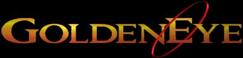
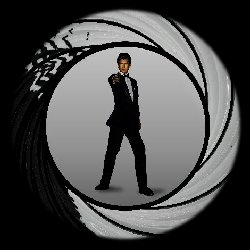
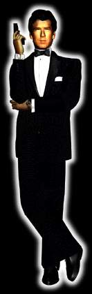

Le Goldeneye est un de ces 2 Galinacé : Bucephala clangula ou Bucephala islandica, vivant dans le Nord de l'Europe. On les voit en Hiver sur les Lacs, estuaires et cotes de l'Europe du Sud, et ils forment de grands groupes sur les plages. Ils se reproduisent sur les Cotes de l'Océan Arctique. On reconnait le Male à sa Tete Vert-Blanche, et ses taches Blanches sur ses joues. — Dictionnaire Illustré du Reader's Digest

Comme beaucoup de Jeux Rare, Goldeneye était très différent de ce qu'il est devenu. Originairement prévu sur Super Nintendo comme un Jeu de Plate-Forme, il passa le cap de la Super Nintendo avec l'arrivée de la N64. Il devait etre une sorte de Virtua Cop , aux premières vues des capacités de la N64. Puis, à force de travail, il devint possible de travailler sur un Jeu en 3D Temps Réel, permettant de recréer des Cinématiques plus proches du Film. Le Joueur ne devint plus alors spectateur, mais aussi acteur du jeu dans sa Totalité.

Le réalisme de Goldeneye et sa fidelité au Film sont les principaux facteurs qui le démarquent des autres Doom-Like, avec le fait de ne pas forcément tuer tout le monde jusqu'a la fin du Niveau puis point. Bond commence les Missions avec un certain nombre d'objectifs spécifiques au Scenario, le tout augmentant selon la Difficulté. Le Stick Analogique est pleinement exploité, et on l'emploie plus pour se cacher, se faufiler. On peut marcher, courrir, s'accroupir, grimper, regarder dans différentes directions, et interagir avec le Scenario (en explosant le materiel par exemple, ou en plombant les murs de balles).
Les Soldats ennemis, en plus d'arborer fièrement les visages des membres de Rare, ont presque 30 animations différentes, comme les façons de marcher, de se faire tuer, dépendant de là ou vous tirez. L'Equipe a beaucoup travaillé sur l'Intelligence Artificielle, essayant au maximum de donner aux Gardes des comportements Humains.

Pour plus d'authenticité, le Script Original fut suivi dans le Processus de création, en plus des notes prises par l'Equipe lors de la Visite des Décors Originaux. Les Acteurs originaux se sont égalemment gracieusement pretés au Jeu du Face-Mapping, en permettant que l'on utilise leurs visages pour le Jeu, ainsi que d'autres Personnages cachés dans le Jeu...
Un des plus forts aspects de Goldeneye est le Deathmatch, qui permet aux joueurs de s'affronter dans l'Arene de leur choix, avec les Personnages de leur choix, tout comme les Armes, l'Energie, etc.
Goldeneye est sorti en Aout 97 aux USA et au Japon, et fut déclaré Meilleur Jeu de l'Année un peu partout. Plus tard, en Novembre, le Jeu sortit en Europe, et devint rapidemment la Meilleure Vente N64 dans l'Angleterre à ce Jour.

Le Vieux Site Officiel de Goldeneye montrait pleins de Photos des Décors : c'est là que l'on voit bien le travail de Rare pour etre le plus fidèle possible au Film. On ne voyait que Streets par contre...